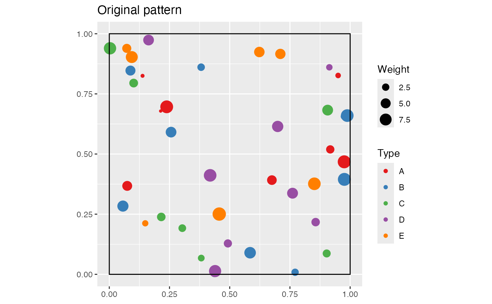
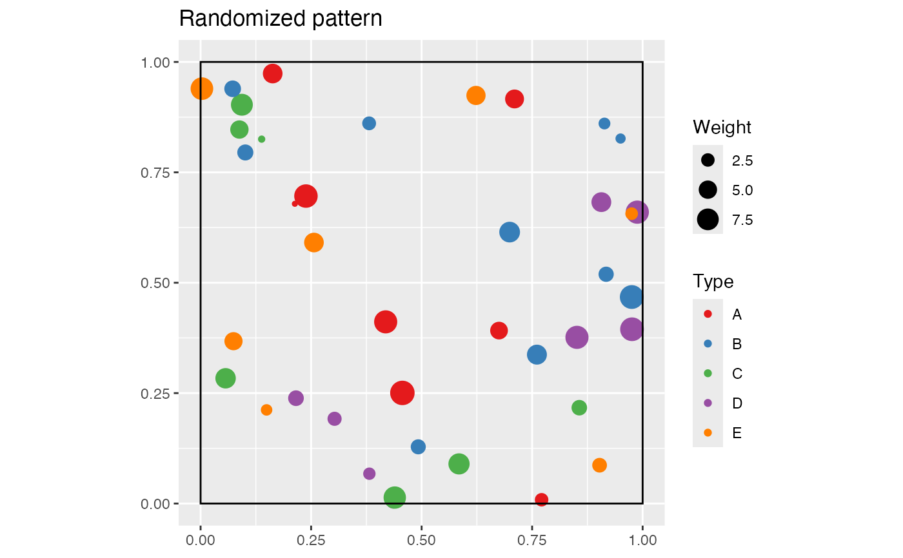

Simulations of a point pattern according to the null hypothesis of random labelling defined for M
rRandomLabelingM.RdSimulates of a point pattern according to the null hypothesis of random labelling defined for M
Arguments
- X
A weighted, marked, planar point pattern (
wmppp.object) or aDtableobject.- CheckArguments
Logical; if
TRUE, the function arguments are verified. Should be set toFALSEto save time in simulations for example, when the arguments have been checked elsewhere.
Details
Point types are randomized. Locations and weights are kept unchanged. If both types and weights must be randomized together (Duranton and Overman, 2005; Marcon and Puech, 2010), use rRandomLocation.
Value
A new weighted, marked, planar point pattern (an object of class wmppp, see wmppp.object).
References
Duranton, G. and Overman, H. G. (2005). Testing for Localisation Using Micro-Geographic Data. Review of Economic Studies 72(4): 1077-1106.
Marcon, E. and Puech, F. (2010). Measures of the Geographic Concentration of Industries: Improving Distance-Based Methods. Journal of Economic Geography 10(5): 745-762.
Marcon, E., F. Puech and S. Traissac (2012). Characterizing the relative spatial structure of point patterns. International Journal of Ecology 2012(Article ID 619281): 11.
Examples
# Simulate a point pattern with five types
X <- rpoispp(50)
PointType <- sample(c("A", "B", "C", "D", "E"), X$n, replace=TRUE)
PointWeight <- runif(X$n, min=1, max=10)
marks(X) <- data.frame(PointType, PointWeight)
X <- as.wmppp(X)
autoplot(X, main="Original pattern")

# Randomize it
Y <- rRandomLabelingM(X)
# Labels have been redistributed randomly across locations
# But weights are unchanged
autoplot(Y, main="Randomized pattern")
